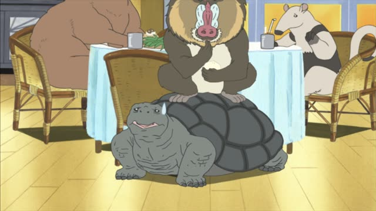
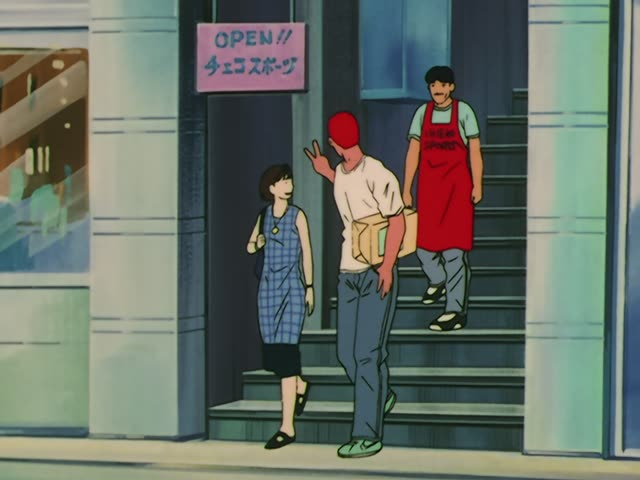
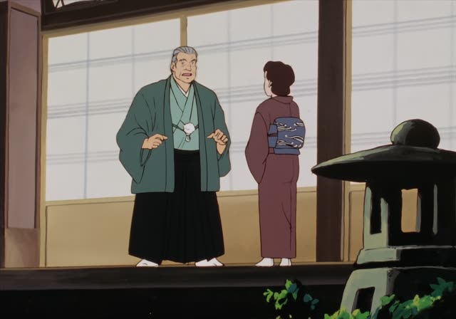

～ように言う
| Polite | ～ように言います |
|---|---|
| Casual | ～ように言う |
Same meaning: "tell someone to do it". Only the politeness changes.
Quartet · Episode 4
会って、ちゃんと話つけるように言ってきます。
"I'll go and tell her to settle it properly."
Plain verb + ように言う means "tell someone to do it". It's how you pass on a request or an order: 早く来るように言った = "I told him to come early".
On this card, Iemori promises to meet his ex-wife and sort things out. 言ってきます makes it polite.
Negative: ～ないように言う, "tell someone not to". Also with 伝える, 頼む.

Shirokuma Cafe · Episode 7
ここに座らないように言って。
"Tell them not to sit here."
On this card, Panda doesn't want anyone on his spot. 座らないように言って: tell them not to sit.
Quick Examples
After a meeting.
部長に明日来るように言われました。
"The manager told me to come tomorrow."
Passive: was told to.
PoliteYour sister is noisy.
静かにするように言ってよ。
"Tell her to be quiet."
CasualA doctor's order.
お酒を飲まないように言われています。
"I've been told not to drink."
PoliteYour friend is late again.
早く来るように言っといた。
"I told him to come early."
CasualWith and without
「早く来て」と言った。
"I said, 'Come early.'" Quoting the words.
早く来るように言った。
"I told him to come early." Passing on the request.
Examples from Media
Oishinbo · Episode 15
私も主人にいつも、そのことを直すように言ってます。
"I always tell my husband to fix that too."

Slam Dunk · Episode 96
ここで買うように言っときます。
"I'll tell them to buy here."

Oishinbo · Episode 14
電話で中止するようにと…
"He said on the phone to cancel it..."
ようにと: the 言う is left out.
Dungeon Meshi · Episode 4
先程わしがオークに持っていくように伝えた瓶
"The jar I told the orcs to take earlier"
伝える works the same way.
1 Litre of Tears · Episode 2
食事だけは絶対に手を抜かないようにって、
"(I always said) to never cut corners on meals,"